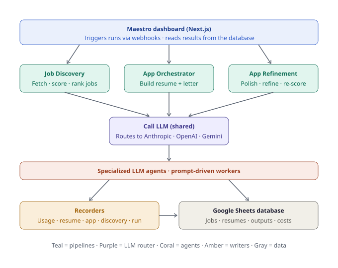
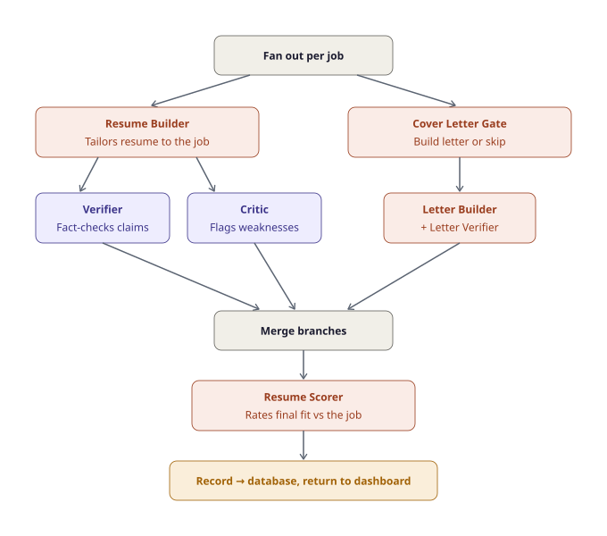

5. Architecture¶
← Running the System · Next: Database Reference →
This page is for developers who want to understand, modify, or contribute to Maestro. It describes the workflow topology, the agent roster, the shared modules, the keying scheme, and the design decisions worth knowing before you change anything.
High-level shape¶

The dashboard frontend code lives in a separate repository and is not part of the backend repo. The backend repo holds the n8n workflow exports, the database template, and the scheduler.
Entry workflows and webhooks¶
Three workflows are entry points. Each has both a manual trigger (for testing in n8n) and a webhook. Every webhook call carries an X-Maestro-Secret header matching MAESTRO_WEBHOOK_SECRET; a missing/wrong secret is rejected. All three are POSTed by postToN8n() in the dashboard's src/lib/n8n.ts with Content-Type: application/json.
| Workflow | Webhook path | Fired by | Request body | Success response |
|---|---|---|---|---|
| Application Orchestrator | /webhook/build-application |
dashboard build/submit routes | { "job_ids": ["job_xxx", ...] } — the entire payload |
202 { ok, accepted, run_id, job_count, job_ids } |
| Job Discovery | /webhook/run-discovery |
scheduler worker only | { "source": "cron" } |
202 with run_id (disc_…) in body |
| Application Refinement | /webhook/refine-resume |
dashboard /api/refine |
refine payload (see below) | 202 { ok, accepted, run_id }; dashboard polls resumes |
| Cover Letter Generation & Refinement | /webhook/generate-cover-letter |
dashboard /api/cover-letters |
generate/refine payload | 202 with run_id (cl_…) in body |
📌 Discovery is not triggered by the Next.js app in-process. The dashboard has no internal timer for it — discovery is fired exclusively by the standalone scheduler container (a manual "run now" still routes through that path, not an app-side timer). This is intentional: a request/response server has no reliable persistent timer.
Build selection contract: the Application Orchestrator is told which jobs to build via the { job_ids: [...] } payload and nothing else — n8n filters by that list and ignores every other column. The dashboard's processed_status='queued' marker is purely a local UI/pacing device for building that payload, never the wire selector. Build is fired by fireNextBatch() (src/lib/build-trigger.ts); user-submitted rows fire whole and are exempt from the application_max_jobs_per_run pacing cap.
Build trigger responses (/api/application/trigger): 503 (webhook URL/secret unconfigured) · 200 { held: true, queued, processing } (a run is still in flight) · 200 { accepted: false, job_count: 0 } (nothing pending) · 202 { accepted: true, run_id, job_count, job_ids } (fired).
Refine payload (/api/refine, a validated pass-through): common keys mode ('polish'|'refine'), application_run_id, parent_resume_id, parent_resume_markdown, refinement_instructions, run_verifier, job_id, url, company, title, jd_text, parent_version, parent_score. Polish adds critic_output + verifier_output (parsed objects from the original run). Refine adds parent_ran_verifier, plus verifier_output only when parent_ran_verifier === true. Validation returns 400 on missing required keys or mode/data-gap mismatches, 503 if the webhook URL is unconfigured, 502 if upstream accepts but returns no run_id.
The agent roster¶
All agents are n8n sub-workflows invoked via Execute Workflow nodes. They share a uniform contract and route LLM calls through Call LLM.
| # | Agent | Stage | Role |
|---|---|---|---|
| 1 | Résumé Builder | application | Draft résumé from master_doc + JD |
| 2 | Cover Letter Builder | application | Draft cover letter |
| 3 | Résumé Verifier | application | Anti-hallucination check on résumé |
| 4 | Cover Letter Verifier | application | Anti-hallucination check on cover letter |
| 5 | Critic | application | Recruiter-style critique of the résumé |
| 6 | Résumé Refiner | application | Rewrite résumé to address critique (gated by enable_refinement) |
| 7 | Résumé Scorer | application | 0–100 fit score with dimensional breakdown |
| 8 | Discovery Scorer | discovery | Dual-axis fit scoring of discovered jobs |
| 9 | Résumé Fine-Refiner | refinement | Apply user refinement instructions on later passes |
| 10 | Job Ranker | discovery | Cheap first-pass ranking to keep the funnel open |
Agents 5, 6, and 7 are intentionally decoupled from company/title/url — they work purely from the JD, the master document, and upstream artifacts. That uniformity lets discovery-sourced and user-submitted jobs flow through the same pipeline.
Pipeline topology¶
Application pipeline¶
The build fans out per job, then runs two branches in parallel — the résumé branch (builder, with a Verifier fact-checking claims and a Critic flagging weaknesses) and the cover-letter branch (gated). Both merge before scoring.

The exact node-level sequence (with the Data Loader, Merge Init, and per-recorder delegation) is:
flowchart TD
W["Webhook / Trigger"] --> RF["Root Folder"]
RF --> DL["Data Loader + Prompt Loader"]
DL --> MI["Merge Init"]
MI --> FAN["Fan Out Plans (per job)"]
FAN --> A1["Agent 1 — Résumé Builder"]
A1 --> A5["Agent 5 — Critic"]
A5 --> A6["Agent 6 — Refiner<br/>(gated by enable_refinement)"]
A6 --> A3["Agent 3 — Résumé Verifier"]
A3 --> A2["Agent 2 — Cover Letter Builder<br/>→ Agent 4 — Verifier<br/>(gated by enable_cover_letter)"]
A2 --> A7["Agent 7 — Résumé Scorer"]
A7 --> MB["Merge Branches → Log Job Result"]
MB --> AR["Application Recorder<br/>→ Resume Recorder → Model Usage Recorder"]Discovery pipeline¶
flowchart TD
W["Webhook / Trigger"] --> RF["Root Folder"]
RF --> DL["Data Loader (discovery mode)<br/>+ Prompt Loader"]
DL --> MI["Merge Init"]
MI --> JF["Job Fetcher"]
JF --> JP["Job Post Processing<br/>(hard filter + dedup)"]
JP --> A10["Agent 10 — Job Ranker"]
A10 --> A8["Agent 8 — Discovery Scorer"]
A8 --> LOG["Log Job Result"]
LOG --> JDR["Job Discovery Recorder"]
JDR --> MUR["Model Usage Recorder"]Refinement pipeline¶
flowchart TD
W["Webhook"] --> SI["Set Inputs<br/>(mode derived: polish vs refine)"]
SI --> R{"Routing IF"}
R -->|polish| A6["Agent 6 — Refiner<br/>reads ORIGINAL critic + verifier"]
R -->|refine| A9["Agent 9 — Fine-Refiner<br/>reads PARENT version's verifier"]
A6 --> VG["Verifier Gate (optional)"]
A9 --> VG
VG --> RR["Resume Recorder"]The mode is derived, not chosen: if a job has exactly one résumé version, the next refinement is a polish (re-works v1 using the original critique). If it already has refinements, it's a refine (builds on the immediate parent).
Shared modules¶
Call LLM (the provider abstraction)¶
Every agent calls Call LLM rather than hitting a provider directly. It normalizes three providers behind one interface:
flowchart TD
SI["Set Inputs"] --> SW{"Switch on<br/>provider"}
SW -->|anthropic| AN["Build Anthropic Request → HTTP"]
SW -->|openai| OA["Build OpenAI Request → HTTP"]
SW -->|gemini| GE["Build Gemini Request → HTTP"]
SW -->|other| ERR["Unsupported Provider Error"]
AN --> NM["Normalize / Build Error Response"]
OA --> NM
GE --> NMAll three return one standard envelope:
{
"success": true,
"content": "...",
"input_tokens": 0,
"output_tokens": 0,
"cached_input_tokens": 0,
"cache_write_tokens": 0,
"model_used": "...",
"provider_used": "...",
"errors": []
}
Provider quirks handled inside Normalize:
- Anthropic — returns the model string as passed. Cache via
cache_control: cache-read ≈ 10% of input price, cache-write ≈ 125%. - OpenAI —
prompt_tokensincludes the cached portion, so Normalize subtracts it to keepinput_tokensnon-cached. No separate cache-write fee. Auto-caches prompts ≥1024 tokens. Pricing lookups prefer the config-canonical model name over the dated API variant. - Gemini — model is in the URL path; system prompt goes in
systemInstruction.promptTokenCountincludes cached tokens (subtracted in Normalize). Auth viax-goog-api-key.
Every provider HTTP node has On Error: Continue (using error output) with retry-on-fail, feeding a provider-specific Build Error Response.
Data Loader¶
Loads config, master_doc, pricing, and watchlist from the Sheet, and generates the run_id: the caller passes parent_execution_id = {{ $execution.id }}, and Data Loader prefixes it (app_ for application, disc_ for discovery, refine_ for refinement). It throws if parent_execution_id is missing — that's a caller bug, not something to paper over.
Recorders¶
Five recorder sub-workflows persist results. All of them take a passed database_id rather than hardcoding a sheet — this lets you point at mock, test, or production databases by swapping one input.
| Recorder | Writes to |
|---|---|
| Model Usage Recorder | model_usage |
| Resume Recorder | resumes + agent_outputs |
| Application Recorder | delegates résumé recording to Resume Recorder |
| Job Discovery Recorder | jobs (discovery rows) |
| Run State Recorder | run_state |
Run Error Handler¶
A dedicated Error Trigger workflow that captures catastrophic failures into the run_errors tab (with execution URL for debugging). It hardcodes the database_id because the error payload doesn't carry one — and because it must not depend on the very Data Loader that may have failed.
Keying scheme¶
Three identifiers, each with a distinct job:
| Key | Format | Purpose |
|---|---|---|
application_run_id |
app_<execution.id> |
Cross-tab join key. jobs, resumes, agent_outputs all key on it. |
run_id |
app_ / disc_ / refine_ + execution.id |
Per-execution trace (rides along in logs/usage). |
resume_id |
{job_id}_v{version} |
Discriminates résumé versions (v1 original, v2+ refinements). |
📌 Don't rename
application_run_idtorun_id. They're different things — the first joins tabs, the second traces an execution.
The two scoring axes¶
Discovery scoring (Agent 8) produces two independent scores per job:
- Target fit — answers "does this match the role being searched for?" Reads only the
target_*config fields. - Background fit — answers "does this match the candidate's actual experience?" Reads
profile_summary,background_titles, and the master doc.
The agent's prompt enforces input isolation: target sub-scores may consult only the target inputs, background sub-scores only the background inputs. One exception — location_match must be equal across both axes. Config fields are authoritative over softer signals in the profile summary if they conflict.
This separation exists because, for an over-qualified candidate deliberately targeting a more junior role, collapsing the two would stamp every legitimate target match as "no fit" due to background bleed.
Pipeline state model (three orthogonal axes)¶
Job state is tracked on three independent axes. They are not to be consolidated — a job can legitimately be, say, queued and hide at once.
| Axis | Column / tab | Values | Owner |
|---|---|---|---|
| Build lifecycle | processed_status (jobs) |
'' \| queued \| processing \| done \| error |
UI writes queued/processing for pacing; n8n writes done/error terminals |
| Discovery triage | job_status (jobs) |
'' \| hide |
dashboard dismiss/un-dismiss only |
| Run lifecycle | run_state tab |
running \| completed \| idle |
Run State Recorder |
done means a build succeeded — it is not a "user-skipped" marker. job_status is deliberately narrow and must never carry queue state.
The scheduler¶
A standalone Node worker (scripts/discovery-scheduler.ts, run via npm run scheduler → tsx) in its own container (Dockerfile.scheduler, node:20-alpine). It:
- Loads env via
dotenvfrom.env.localthen.env; values already set (e.g. fromdocker-compose) win and are not overwritten. - Reads
job_search_cron+timezonefrom theconfigtab via the samereadSheetthe dashboard uses (no duplicated logic). RequiresGOOGLE_SHEETS_CLIENT_EMAIL,GOOGLE_SHEETS_PRIVATE_KEY,GOOGLE_SHEETS_DATABASE_ID. - Validates the cron expression; an invalid value keeps the previous schedule rather than crashing. A missing
job_search_cronmeans no task is scheduled. - Re-reads config every
CONFIG_REFRESH_MS(default600000= 10 min) and reschedules only if the cron or timezone changed. - On each tick, checks the run state and skips if a discovery run is already in flight (a read failure logs and fires anyway — n8n dedup catches duplicates). Then POSTs
{ source: 'cron' }to${N8N_WEBHOOK_BASE_URL}/run-discoverywith theX-Maestro-Secretheader. - Requires
MAESTRO_WEBHOOK_SECRET. If it's unset, the tick logs "webhook secret not configured; skipping tick" and does not fire. - Exits cleanly on
SIGINT/SIGTERM.
Why external? n8n's Schedule Trigger config is static — it can't read a cron expression out of the sheet (the read happens after the trigger fires). The worker is also migration-friendly: its only coupling to n8n is the URL from runDiscoveryUrl(); when n8n is eventually retired, only that target changes.
Migration intent¶
n8n was chosen as a fast demo substrate. The long-term plan is to migrate the orchestration into the Next.js app. The architecture anticipates this: the scheduler, run-state model, and webhook contracts are app-side and stable; retiring n8n changes only the webhook target URLs.
n8n pitfalls (read before editing workflows)¶
Hard-won lessons. Ignore at your peril:
- Literal
=prefix bug. Typed Workflow Inputs crossing Execute Workflow boundaries can get an erroneous leading=. Sub-workflows use astripEqualshelper to clean inputs. - Typed object fields. Trigger schema fields like
config,critique,verifiermust be typedObject, notString— String typing makes n8n JSON-stringify them on receipt, silently breakingconfig.model_Xlookups. - Expression syntax differs by node.
={{ }}vs{{ }}behaves differently between HTTP nodes and Sheets nodes; mixing them causes#NAME?formula errors. - No manual leading
=in expression-mode fields. - Publish sub-workflows. Saving isn't enough — unpublished sub-workflows aren't callable.
- Refresh schema cache (⟳ on the Execute Workflow node) after changing a sub-workflow's trigger schema.
- One match column for Sheet upserts — n8n only handles a single match column cleanly. The
run_statetab uses a compositestate_key. max_tokenstruncation. If a JSON parse fails andoutput_tokensequals the configured max, the response was cut off — raise the cap.- Parse defensively. LLMs sometimes append commentary after JSON; strip fences and extract the first
{to last}. - Run Once for Each Item on multi-company parse nodes (Greenhouse/Ashby), not the default all-items mode.
Google Drive / Docs pitfalls¶
@pageCSS margins are ignored on HTML→Google-Doc import; margins require an Apps Script post-process step.- HTML→Google-Doc conversion strips formatting — the dashboard's résumé export uses the
docxnpm library to emit real.docxinstead. - Apps Script needs explicit OAuth scopes in
appsscript.json, atestAuthrun before deploy, and a "New version" selection on redeploy (or it serves cached code).